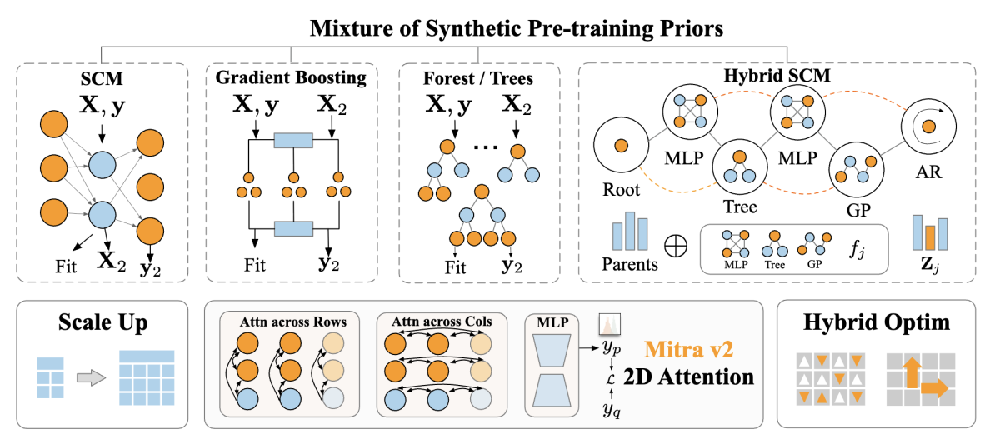
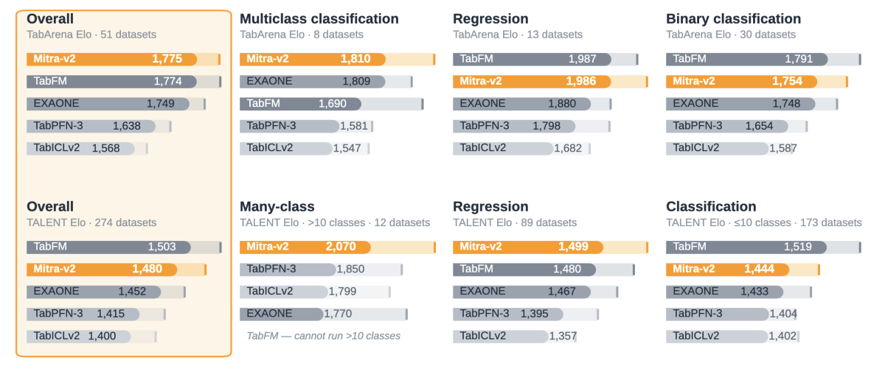

定位、发布与模型边界

| 项目 | 分类 | 回归 |
|---|---|---|
| 结构 | 12层2DTransformer，跨行/列注意力 | 相同骨干 |
| 参数 | 75.7M | 76.7M |
| 输出 | 原生10类head；更多类层次分解 | 1000-bin分布head；点预测为分布均值 |
| 数据 | 纯合成表，非客户真实表预训练 | 纯合成表 |
| 许可 | Apache2.0 | Apache2.0 |
10倍行数、约3倍列数是相对前代的预训练范围扩展，不是推理时任意无限表格。此前SCM/树生成器之外，Hybrid SCM在单一因果图中混合神经网络、树、Gaussian Process、时间自回归关系；这是生成机制的先验设计，不证明现实业务变量具有已识别因果关系。新优化器被描述为hybrid，完整公式未从未读报告补造。
适配recipe、数据隔离与推理
| 公开冻结配置 | 数值 / 行为 |
|---|---|
| 全参FT | 50步；lr1e-5、warmup10、weight decay0.3 |
| bagging | 8折子模型，预测均值；最佳验证checkpoint |
| 小型二分类例外 | 训练行数≤16384时lr3e-6 |
| 宽表>256列 | 分类默认dtype-gated top-K选择；回归默认truncated SVD到256，不是两者都SVD |
| FT支持集cap | 分类16384；回归20480 |
| 预测支持集cap | 二类16384；多类/回归32768 |
| 二分类采样 | class-balanced，非统一随机 |
| 评测控制 | task time_limit3600；每bag child FT250s；超时保留已完成children，需要显式开启环境开关 |
默认heldout-in-support：每child在训练fold上适配，用自己的heldout fold验证；预测测试集时把原外层训练表（含该child heldout）作ICL支持。这里用的是训练/验证标签，不是测试标签。另一个默认关闭开关可把外部验证集加进测试预测support；验证预测本身仍train-only。比较训练数据边界时须固定这些开关，不能只写“8折”。
回归每child在其训练fold目标范围归一化后定义1000bin，直方图均匀bin内质量的等权混合支持mean、CDF、quantile、log_prob、CRPS。不同children边界不同；给出预测区间不自动保证域外覆盖率或校准。stock AutoGluon v1回归head不兼容本1000-bin，需配套包，不能套旧接口推定同指标。
源码README把速度优化与recipe分开：大query chunk减少重复编码，支持集超cap时仍每chunk重采样。十个相关表90split，50胜40负，几何误差比1.0001，不是逐任务bit-identical。可选support cache默认关闭；超cap时会固定一次support抽样，改变随机过程，不能把其约5倍预测加速当所有任务总加速。
实验、时间协议与研究启发

| 官方披露 | 结果与边界 |
|---|---|
| TabArena | 51数据集；主张single-model field领先；不是所有AutoML系统总榜无条件第一 |
| 对v1可原生比较 | 33数据集中的32项改善，不代表全部51项都有对照 |
| TabArena默认配置Elo | 总体1774.6，分类1756.3，回归1985.6；不同榜口径不可平均 |
| TALENT | 约300数据集，强调>10类；未从图或摘要编造完整逐表分数 |
| ScoringBench | 官方称FT版本第一；无完整数表/置信区间，不造CRPS数值 |
| 已发布38分类artifact计时 | H100每评估单位均值0.3h、最大1.4h（APSFailure） |
博客称所有51任务完成1h协议；recipe把3600s任务预算、250s/child与保留children开关列得更具体，但同时披露最大墙钟1.4h。它们可能统计范围不同，公开片段不足以确定原因，因此不能改写成严格端到端60分钟内完成所有任务。原文/recipe与该缺口一起保留。
📊 相关可视化: 中文Poster